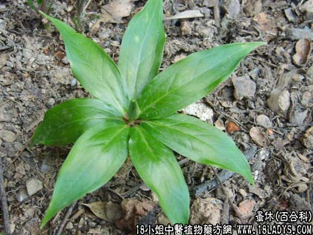

【中药概述】
蚤休为百合科草本植物云南重楼或七叶一枝花的根茎。苦、微寒；有小毒。归肝经。
1．清热解毒，消痈：用于热毒疮痈、咽喉肿痛、痄腮、瘰疬等证，如（外科全生集<夺命散>；治咽喉肿痛，可与牛蒡子，桔梗，玄参等配伍。
2．熄风定惊：用于温热病高热惊风抽搐，有凉肝息风之效，常与黄芩，钩藤，蝉蜕等配伍。
3．用治毒蛇咬伤及蜂、蝎螫伤等，如<独一散>。
【药效鉴别】
本品解毒、祛毒的作用大于蒲公英，地丁，银花等品，故凡对毒性大的疾病，常用本品解毒护心（可免毒气内侵的意思）。
【临证应用】
重楼根茎去皮，捣研制片，每次3g，日2次，饭后服。10天为一疗程，共服3个疗程，每疗程间隔停药3天。
【药理作用】
1.抑菌作用，对流感病毒、痢疾杆菌、沙门氏菌、肺炎双球菌、脑炎双球菌链球菌等有抑制作用；
2.有抗炎、镇静、镇咳作用。
【化学成分】
含甾体皂甙（蚤休士的宁甙），尚含生物碱、氨基酸。
【用量用法】
本品9——15g，水煎服，或入丸、散剂。
【使用注意
服用过多，可引起恶心、呕吐、头痛等。
【注】
两种“蚤休”应分清。
中药以“蚤休”之名入药的有重楼和拳参两种。
重楼为百合科植物重楼或七叶一枝花的干燥根茎。性微寒；味苦；有小毒。功效是清热解毒，消肿止痛，凉肝定惊。用于疔疮痈肿，咽喉肿痛，毒蛇咬伤，跌打伤痛，惊风抽搐。
拳参为蓼科植物拳参的根茎。性微寒；味苦、涩。功效清热解毒，消肿、止血。用于赤痢、热泻、肺热咳嗽、痈肿、瘰疬、口舌生疮、吐血、衄血、痔疮出血，毒蛇咬伤等。